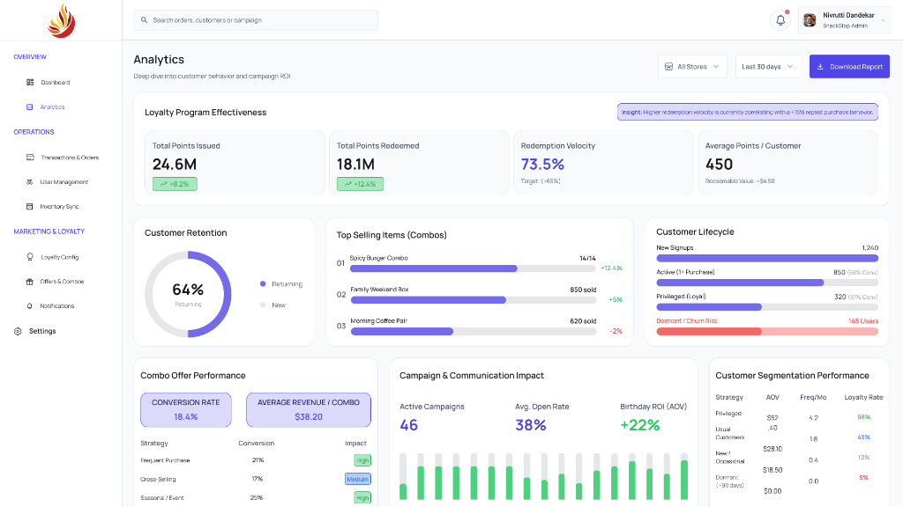
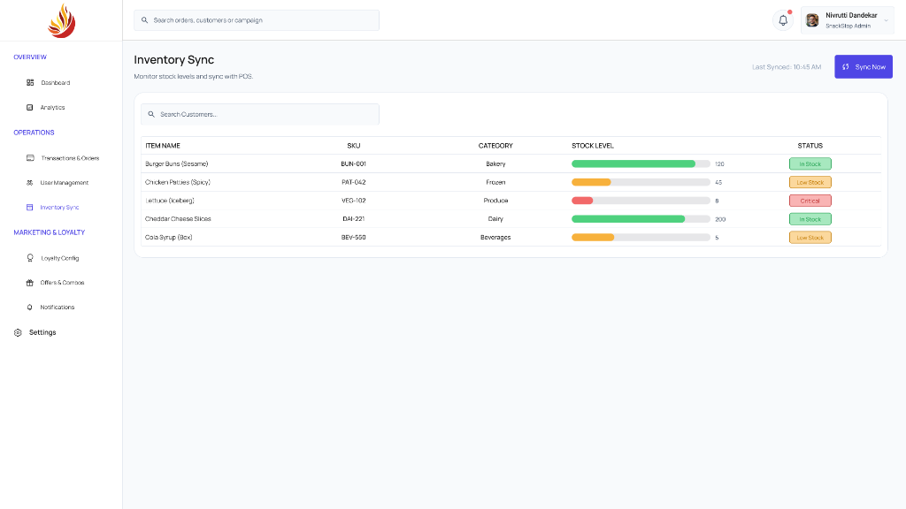
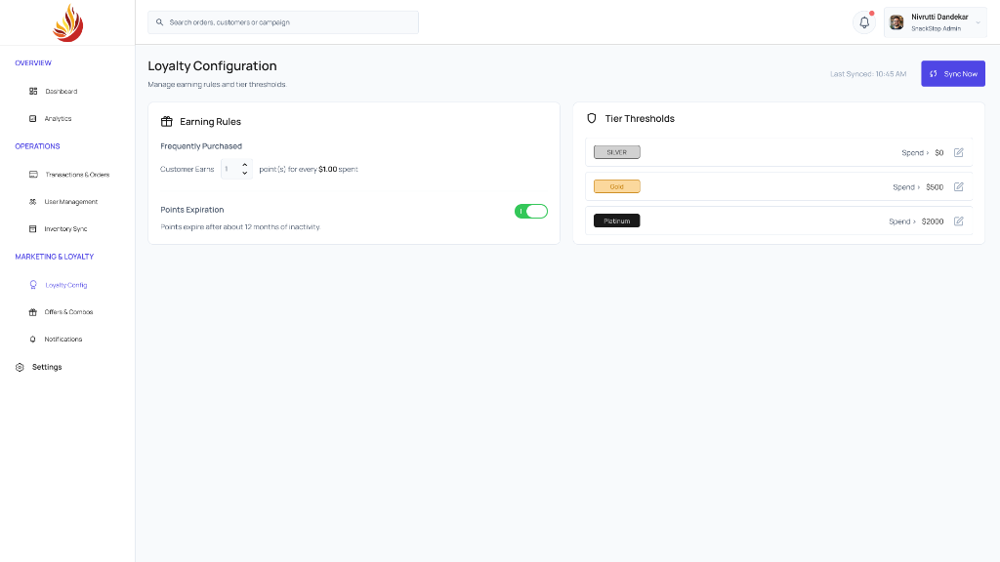
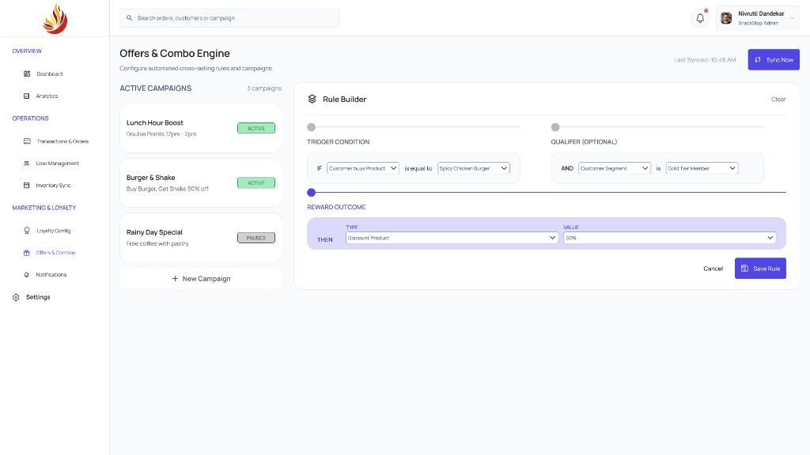

Bombay Spices
Bombay Spices is a digital loyalty platform concept designed to strengthen customer engagement for a retail grocery business. The project explores how a centralized rewards ecosystem can encourage repeat purchases, personalize promotional offers, and provide the business with better visibility into customer purchasing behavior. The objective was to create a seamless experience that benefits both customers and store administrators while fostering long-term brand loyalty.
The Challenge
Traditional grocery loyalty programs often struggle to keep customers consistently engaged beyond their initial purchase. Rewards are frequently difficult to track, promotional campaigns lack personalization, and business have limited visibility into customer purchasing behavior. As a result, customers receive little ongoing value while retailers miss opportunities to strengthen long-term relationships.
Key Challenges:
- Customers lacked a clear view of their available rewards and loyalty points.
- Promotional offers were generic rather than tailored to purchasing behavior.
- Store administrators had limited insight into customer engagement patterns.
- The loyalty experience was disconnected from everday shopping habits.
Design Strategy
The solution focused on creating a loyalty platform that was simple to understand, rewarding to use and scalable for future business growth.
Design Strategy:
- Simplify the process of tracking loyalty rewards.
- Encourage repeat purchases through personalized offers.
- Improve visibility into customer behavior for administrators.
- Create a structured dashboard for managing rewards and promotional campigns.
- Design a consistent experience for both customers and internal teams.
Ideation & Exploration
The exploration phase focused on identifying how loyalty systems could become more engaging without adding unnecessary complexity. Multiple dashboard layouts and infomration hierarchies were explored to determine the most effective way of presenting rewards, promotions and customer insights.
Design Considerations:
- Surface loyalty points where users naturally expect to find them.
- Reduce friction during reward redemption.
- Organize promotional campaigns for quicker management.
- Balance analytical information with everyday usability.
Final Design
The final interface brings together customer engagement, operational insights, and loyalty management into a centralized administrative dashboard. Information is organized using a clear visual hierarchy, allowing administrators to monitor performance, manage promotional campaigns, and oversee customer rewards without navigating through multiple systems.
Design Highlights:
- Centralized loyalty management dashboard.
- Clear visualization of business metrics.
- Streamlined promotion management.
- Customer behavior insights.
- Consistent component-based interface.





Project Impact
The proposed solution demonstrates how a unified loyalty program can improve operational efficiency while strengthening customer engagement.
Potential Outcomes:
- Increased customer retention through a rewarding loyalty experience.
- Better visibility into purchasing behavior and engagement trends.
- More effective promotional campaign management.
- Faster administrative workflows through centralized operations.
- Improved customer satisfaction with a transparent rewards system.
Reflections
Designing the Bombay Spices reinforced the importance of balancing business objectives with user experience. While the platform focuses on customer loyalty, equal attention was given to the administrative workflow to ensure that managing promotions, rewards, and customer data remained efficient. This project strengthened my understanding of designing enterprise dashboards where usability, information hierarchy, and operational efficiency are equally important.